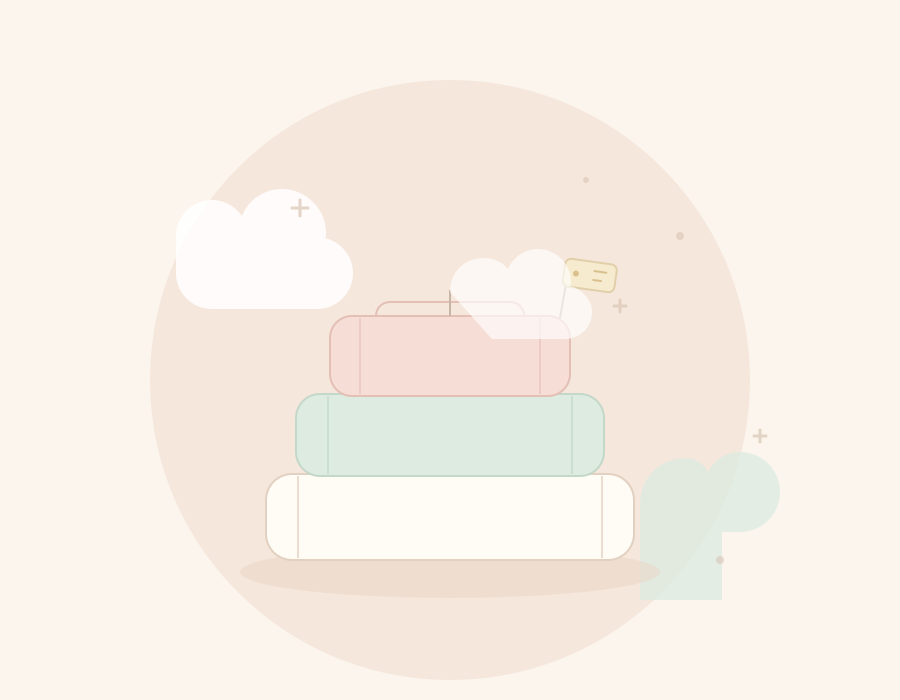

نختار ببطء
مجموعة صغيرة تتجدّد على مهل، بدل عشرات القطع التي لا نعرف خاماتها جيدًا.
بدأنا من فكرة بسيطة: ملابس طفل تحسّ فيها بالراحة قبل أن تراها. ومن الرياض، نختار القطن على مهل.
بدأت غيم في الرياض من فكرة بسيطة: ملابس أطفال تحسّ فيها بالراحة قبل أن تراها. كثير من القطع جميلة من بعيد، لكنها تضايق الطفل من قريب؛ أزرار صلبة، أقمشة لا تتنفّس، أو ألوان صاخبة.
فبدأنا نختار القطن على مهل، ونُبقي الألوان قريبة من البيت: بيج، وردي فاتح، أخضر نعناعي، وأزرق سماوي. ونحرص أن تكون الخياطة ناعمة على البشرة، والقصّة واسعة بما يكفي للحركة.
غيم ليست علامة كبيرة، ولا نريدها أن تكون. نكتفي بمجموعة صغيرة نعرف كل قطعة فيها، ونرسلها إليك بعناية من الرياض.
«نؤمن أن ملابس الطفل ليست تفصيلًا صغيرًا؛ هي أول ما يلمس بشرته في الصباح، وآخر ما يشعر به قبل النوم.»

من غرفة صغيرة في الرياضتشرح سبب وجود غيم، وسبب بقائها صغيرة.
مجموعة صغيرة تتجدّد على مهل، بدل عشرات القطع التي لا نعرف خاماتها جيدًا.
إذا لم تكن القطعة مريحة على الطفل، لا نعرضها. الراحة قبل الشكل، دائمًا.
تسأليننا عن المقاس أو الخامة، ونجيبك بصدق. ونحب أن نعرف رأيك بعد التجربة.
ثلاث خطوات بسيطة، نهتم فيها بالتفاصيل الصغيرة.
نلمس القماش ونتأكد من نعومته وتنفّسه قبل أن نقرر إضافته للمجموعة.
نتأكد من المقاس والمرونة والأزرار، ومن أن الحركة فيها طبيعية ومريحة.
نغسل أيدينا، نطوي القطعة بهدوء، ونرسلها إليك مع بطاقة صغيرة من غيم.
راسلينا على واتساب، ونساعدك في اختيار الأنسب لطفلك. نجيب خلال ساعات العمل.